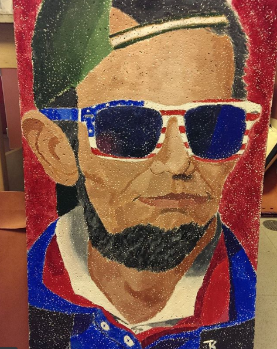

We here at Kent University take our art seriously. We bring about the best artists from around the country to come to our campus and teach undergraduate programs for aspiring artists and graphic designers. Our students receive instruction from only the best, and are cultivated so they can produce their best art and design they can, to build only the best portfolios to send out and get an edge up in the competitive world of Art and Graphic Design.
The Fine Arts of This Modern Age
With the focus that we have in this technology minded university, we are proud to claim that alongside our exceptional engineering programs, we also offer a wide range of courses and study in Graphic Design and other arts.
